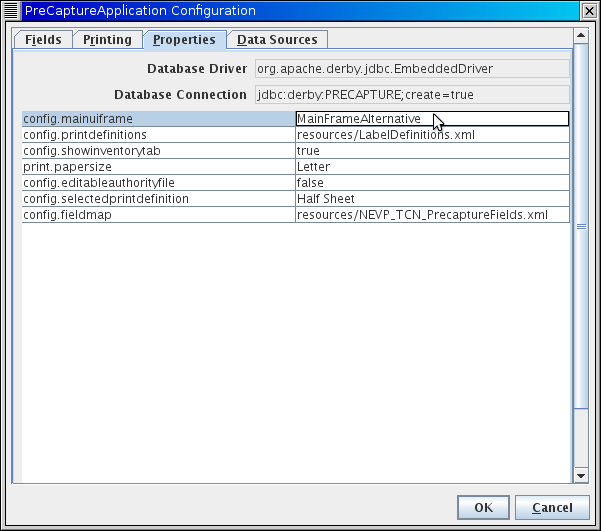

This application is highly configurable. Some of the configuration is accessed through the configuration dialog in the user interface, other elements are in a properties file, others in xml configuration files.
Configuration can be changed in the following places. User marks configurations that are expected to be set by individual users. Administrator marks configurations that are expected to be set at particular deployment sites or for particular projects.
Open the configuration dialog with File/Configuration. Select the Printing tab. From the picklist select the desired configured print format to use. If you need a different format that isn't listed on this screen, see the Editing XML formats section below. You can set the default print format from the Properties tab, by setting the value of the config.selectedprintdefinition property to match the desired default format name.

Construct a csv file with the following columns:
Family,Genus,SpecificEpithet,SubspecificEpithet,InfraspecificEpithet,InfraspecificRank,Authorship
This file must be comma separated, the text fields may optionally be enclosed in quotes. Encoding must be utf-8.
Load this file from the Data Sources tab of the Configuration Dialog (accessed with File/Configuration), by pressing the Load Taxon Authority File button and picking a csv file. The new authority list will be available in the Taxon combo box when you delete all text from the box.
Properties are store in a text file called PreCapture.properties which is created in the application directory. You can edit this file directly, or with the Properties tab of the Configuration Dialog.
To change the main frame from separate tabs for Label and Print List to a split pane, change the property config.mainuiframe from "MainFrame" to "MainFrameAlternative"
These properties control how trinomials and quadrinomials are transfered from the taxon authority file onto the print list. There are three options (1) allowquadrinomials=true, both subspecific epithet and infraspecific epithet are copied over if present. (2) allowquadrinomials=false, putsubspeciesininfra=true always construct a trinomial with the trivial epithet being placed in the infraspecificEpithet field. If a subspecies epithet is being placed in infraspecificName, place the value from config.trinomialsubsprank in infraspecificRank. (3) allowquadrinomials=false, putsubspeciesininfra=false if subspecific epithet is populated but infraspecific epithet is not, copy the subspecific epithet to subspecific epithet and leave infraspecific epithet blank, otherwise for a quadrinomial, leave subspecific epithet blank and put the trivial epithet into infraspecificepithet with a corresponding infraspecific rank.
Print formats and fields on container labels are controled by XML configuration files. These XML configuration files follow XML schema documents present in the repository.
Default configurations for print format and field list are included in the packaged jar file. Additional configurations can be created and either package in the jar file or placed on the local file system. The PreCapture.properties file contains a property for the location of each of these two configuration files. A relative path will be within the jar, and absolute path on the local file system.
Obtain a copy of the default print format configuration file: http://datashot.svn.sourceforge.net/viewvc/datashot/trunk/precapture_app/src/edu/harvard/mcz/precapture/resources/LabelDefinitions.xml
Save this file to your local file system and edit as desired (e.g. by adding new configurations). See the schema for documentation of each element.
Edit the property config.printdefinitions in PreCapture.properties to point to the absolute path to your new file on your file system.
Test barcode generation using the longest text strings that you expect to generate, and see if the barcodes that are produced are consistently readable from the printer(s) that you are using
Obtain a copy of the default field list configuration file: http://datashot.svn.sourceforge.net/viewvc/datashot/trunk/precapture_app/src/edu/harvard/mcz/precapture/resources/NEVP_TCN_PrecaptureFields.xml
Save this file to your local file system and edit as desired. See the schema for documentation of each element. You must set a new version number in this file if you make any changes.
Edit the property config.fieldmap in PreCapture.properties to point to the absolute path to your new file on your file system.
You Must make a copy of this file available to the software running the digitization apparatus to allow the encoded information to be correctly decoded when the barcodes are read during digitization. The project and version of the configuration file are encoded in the barcode and will be used to match the rest of the barcode to the correct configuration file and the correct decoding of the barcodes into fields.
The Inventory data set and the loaded taxon authority file are backed up to .csv exports each time the program successfully exits. These files are placed in a folder called backups inside the current directory. A new timestamped backup of the inventory file is written each time the program exits, and the inventory and taxon authority file are also both backed up to files named Inventory_backup.csv and TaxonAuthorityFile_backup.csv, overwriting the existing file each time the program exits.
Backups of the taxon authority file and inventory can be reloaded from the Data Sources tab of the Configuration Dialog (accessed with File/Configuration).
Source code for this application can be found in the SourceForge repository for the MCZ's DataShot project. If you wish to help develop this application, please make a request to join the SourceForge project. http://sourceforge.net/projects/datashot/ The source code for the project can be found under precapture_app in the DataShot trunk: http://datashot.svn.sourceforge.net/viewvc/datashot/trunk/precapture_app/